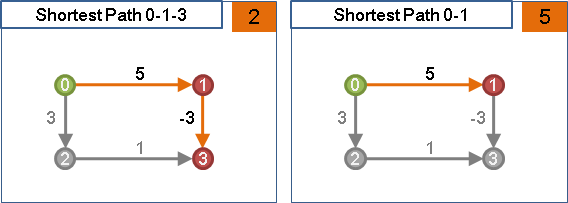
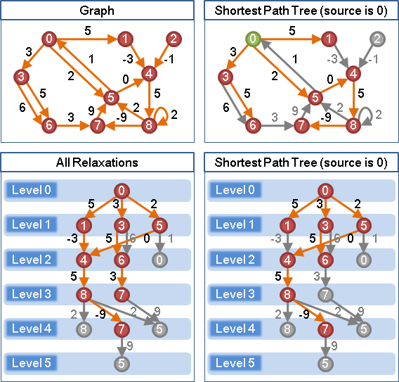
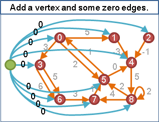

Single Source Shortest Paths: Label Correcting Algorithm
用途
一張有向圖，選定一個起點，找出起點到圖上各點的最短路徑，即是找出其中一棵最短路徑樹。可以順便偵測起點是否會到達負環，然後找出其中一只負環。
此演算法曾由西南交通大学段凡丁《关于最短路径的SPFA快速算法》重新發現，於是中文網路出現了Shortest Path Faster Algorithm, SPFA的通俗稱呼。學術上查無此稱呼，請勿濫用。
想法
當最短路徑只有正邊和零邊，截去末端之後，仍是最短路徑，而且長度一定更短。當有負邊，長度不會更短，反而更長。
圖上有負邊，則無法使用Label Setting Algorithm。受到負邊影響，不能先找最短的那一條最短路徑。當下不在樹上、離根最近的點，以後不見得是最短路徑。
圖上有負邊，就必須使用Label Correcting Algorithm。就算數值標記錯了，仍可修正。

由起點開始，不斷朝鄰點拓展，不斷修正所有鄰點的最短路徑長度，其中必然涵蓋到最短路徑樹的點與邊。拓展過程當中，儘管無法確定最短路徑樹的長相，但是可以確定最短路徑樹正在一層一層生長。
一條最短路徑頂多V-1條邊，一棵最短路徑樹頂多V層。拓展鄰點V-1層之後，必能完成最短路徑樹。
演算法：找出一棵最短路徑樹
令w[a][b]是a點到b點的距離（即是邊的權重）。 令d[a]是起點到a點的最短路徑長度，起點設為零，其他點都設為無限大。 一、把起點放入queue。 二、重複下面這件事，直到queue沒有東西為止： 甲、從queue取出一點，作為a點。 加速：如果queue已有parent[a]，則捨棄a點並且重取。 乙、找到一條邊ab：d[a] + w[a][b] < d[b]。 丙、以邊ab來修正起點到b點的最短路徑：d[b] = d[a] + w[a][b]。 丁、把b點放入queue。 加速：如果queue已有b點，則不放。
演算法：偵測起點是否會到達負環
最短路徑一旦經過負環，就會不斷地繞行負環，最短路徑長度成為無限短。
如果沒有經過負環，一條最短路徑最多只有V-1條邊；如果經過負環，一條最短路徑就有無限多條邊。順手記錄最短路徑的邊數，就能順手偵測負環。
演算法：找出起點可以到達的一只負環
確認負環存在之後，利用parent[]陣列，往回追溯，最短路徑的其中一段一定有著負環。
時間複雜度
圖的資料結構為adjacency lists的話，每一層最多有V個點、E條邊，最多拓展V-1層（遭遇負環則是V層），時間複雜度為O((V+E)*V) = O(V^2 + VE)，通常簡單寫成O(VE)。
圖的資料結構為adjacency matrix的話，便是O(V^3)。
UVa 10557 10682
延伸閱讀：偵測圖上是否有負環
額外增加一個點，額外增加該點連到圖上各點的邊，使該點能夠抵達圖上各處。以該點為起點，就能偵測整張圖上是否有負環、從圖上找到一只負環。
